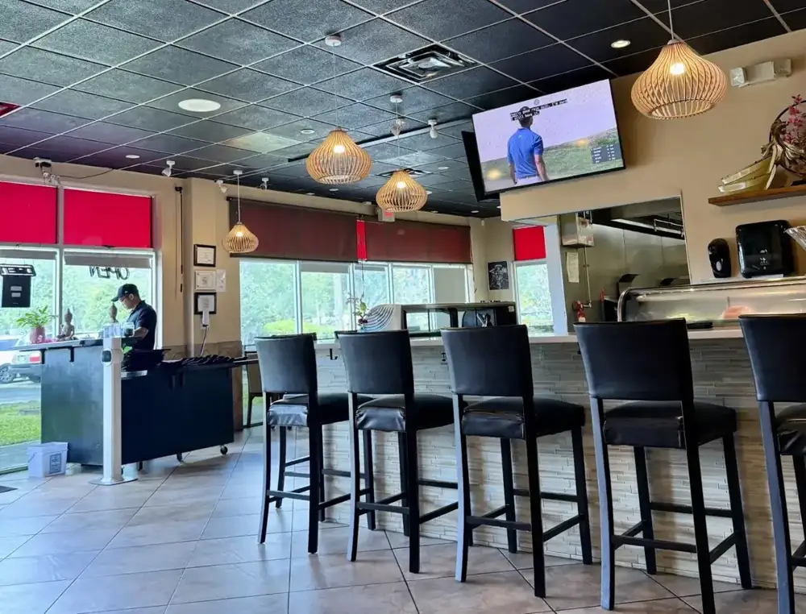
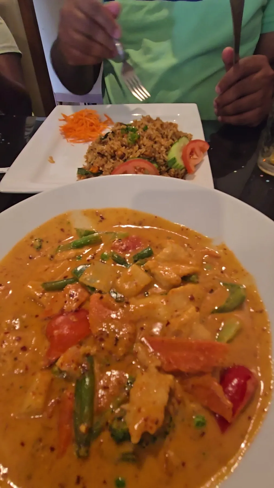
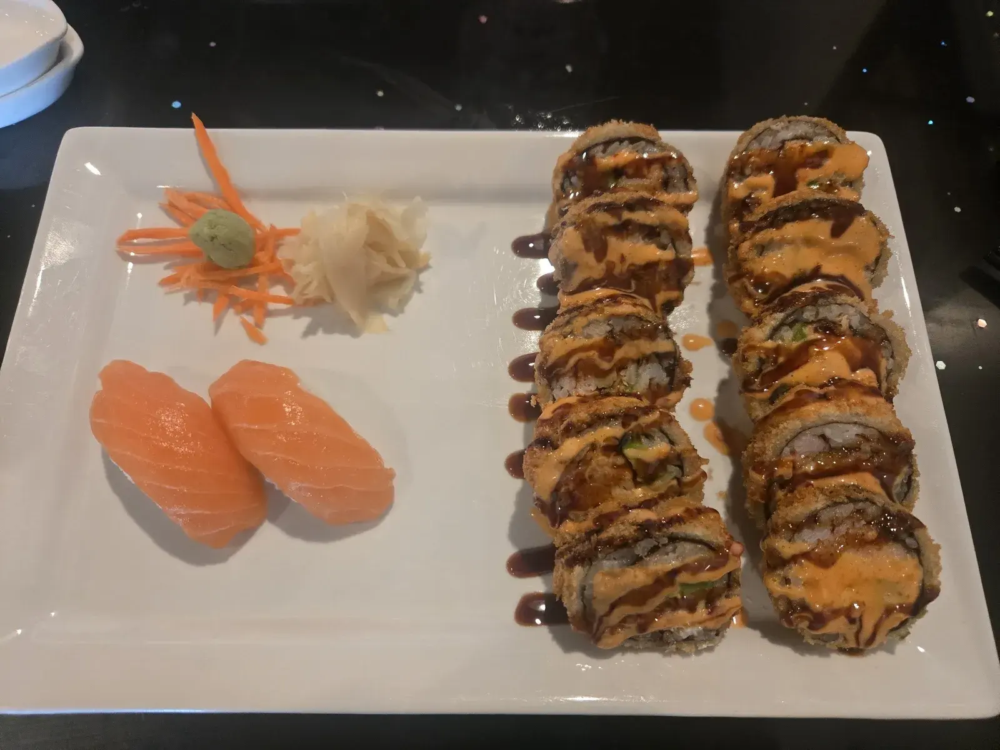
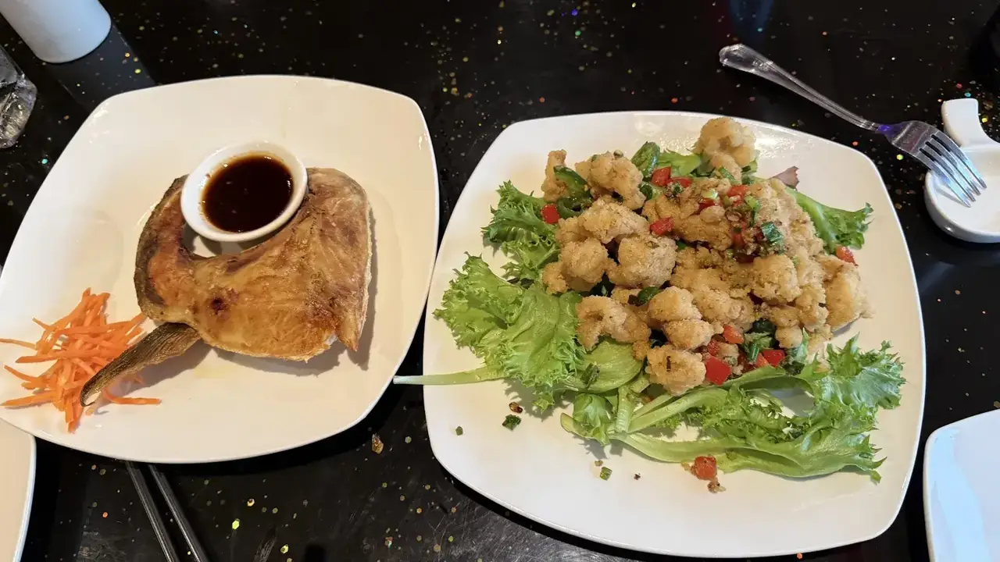
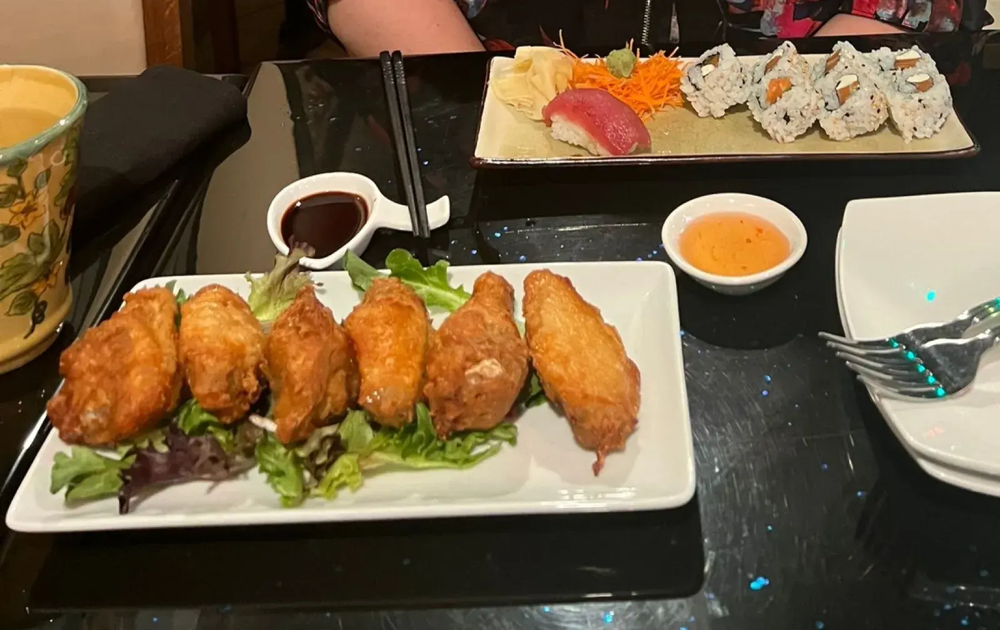
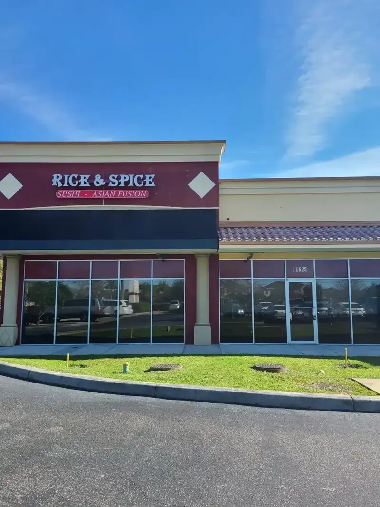

Sushi rolls
Signature rolls like the Black Dragon, Rainbow and Shrimp Tempura, plated by the sushi bar.
Sushi & Asian fusion · Tampa, FL

Hours Mon · ClosedTue · 5–9:30 PMWed · 5–9:30 PMThu · 5–9:30 PMFri · 11:30 AM–2:30 PM, 5–9:30 PMSat · 11:30 AM–2:30 PM, 5–9:30 PMSun · 11:30 AM–2:30 PM, 5–9:30 PM
11625 Sheldon Rd, Tampa, FL 33626
Rolls reviewers call super fresh, Laos ceviche, Tipsy Noodle and a sushi bar, with Thai and Chinese dishes beside them.
What guests keep ordering
Sushi on one side, Laotian, Thai and Chinese cooking on the other.
Signature rolls like the Black Dragon, Rainbow and Shrimp Tempura, plated by the sushi bar.

Salmon, tuna, hamachi, escolar and unagi, by the pair.

Pad Thai, Tipsy Noodle, Pad Sa Ew and fried rice, many in a lunch size.





4.8 ★ · 564 Google reviews
I travel throughout the state, and this is a top 3. The Laos ceviche is one of the best dishes I’ve had. Jon and lit are great and super welcoming, just like everyone else.
Hidden gem!!! Son and I out looking for a new sushi spot. Popped in and WOW!! Incredible fresh ingredients and beautifully prepared rolls. Great fusion as well with Laotian, Thai and Chinese options. Wish we could have eaten more but left stuffed and happy. The mango sticky rice for dessert disappeared so fast couldnt get a Pic. Can't wait to go back!!
Tampa Bay Food Tours has driven by Spice & Rice a hundred times and always said, “we need to try that place.” Today we finally did, and we’re glad we made the effort. The standout? The Tipsy Noodle, stir-fried wide rice noodles with egg, assorted vegetables, and fresh basil. Flavorful, satisfying, and definitely something we’ll be craving again.

Our story
Rice & Spice sits in a plaza on Sheldon Road in Tampa, behind a maroon sign with a lotus on the logo. The menu pairs sushi rolls with Laotian, Thai and Chinese cooking, so one table can order a Black Dragon Roll, Sai Oua sausage and a plate of Pad Thai.
Guests mention the people as much as the plates. Reviewers name Lit and Jon as welcoming, one regular always asks for Lit, and a traveller who eats across the state called it a top three. A food tour team drove by a hundred times before stopping in and left planning to return.
Visit
11625 Sheldon Rd, Tampa, FL 33626
First come, first served. For a party of 6 or more, reserve ahead. Closed Mondays.